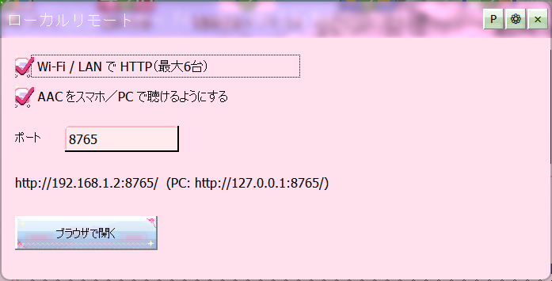

ローカルリモートをONにすると、同じWi-FiやLANにつながっているスマホやPCのブラウザから、このソフトを操作できるようになります。同時に最大6台までつなげます。インターネットへは公開しません。

ローカルリモート設定
http://（LANのIP）:ポート/ という住所が出ます。127.0.0.1 でも開けます。はじめてONにしたときは、Windowsファイアウォールの許可を求められることがあります。許可しないと、他の機器からつながりません。
http://…/overlay を開くと、透過の曲名・状態表示になる簡易HTMLが出ます。OBSのブラウザソースに入れて、配信画面に曲名を出せます。ライブ配信する をご覧ください。…/api/queue-add?i=行番号 を開くと、その行を次に流す予約に入れられます。その場にいる人に次の曲を選ばせる、という使い方ができます。ローカル用途向けで、認証はありません。ほかのソフトとポートが競合するときは、番号を変えてください。変えたあとは、スマホ側の住所も新しい番号にします。
配信中や、パソコンから離れて音楽を流しているときにいちばん便利です。ライブ配信する と一緒に開いておくと、手が離せない場面でも曲を変えられます。
この機能はインターネットへの公開はしません。同じネットワークの中だけで使う想定なので、認証のしくみは持っていません。知らない人がつながる場所（公共のWi-Fiなど）では使わないでください。